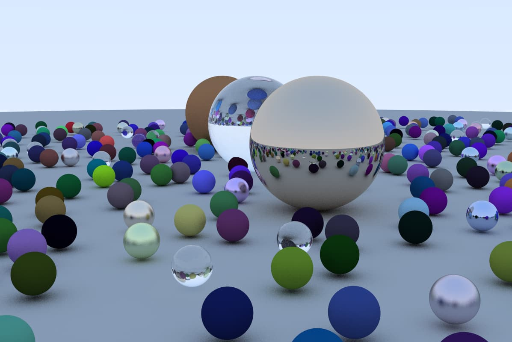
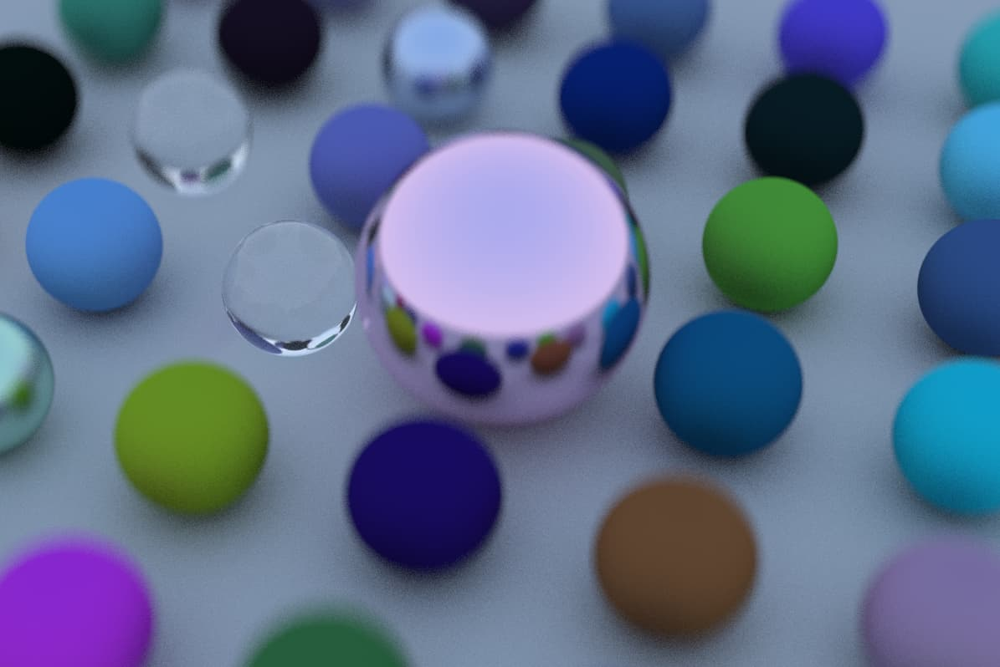
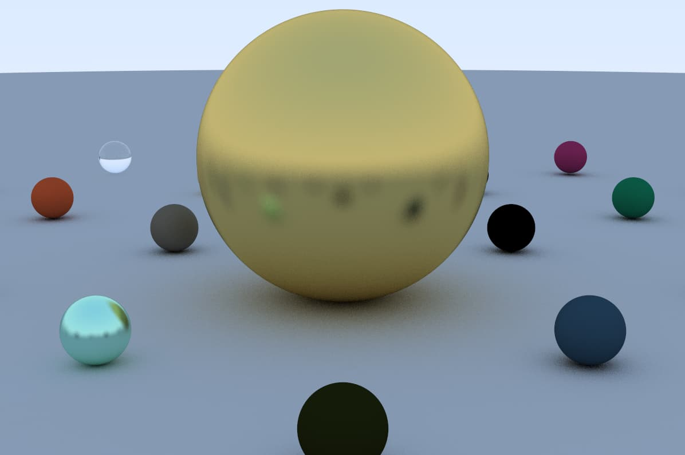
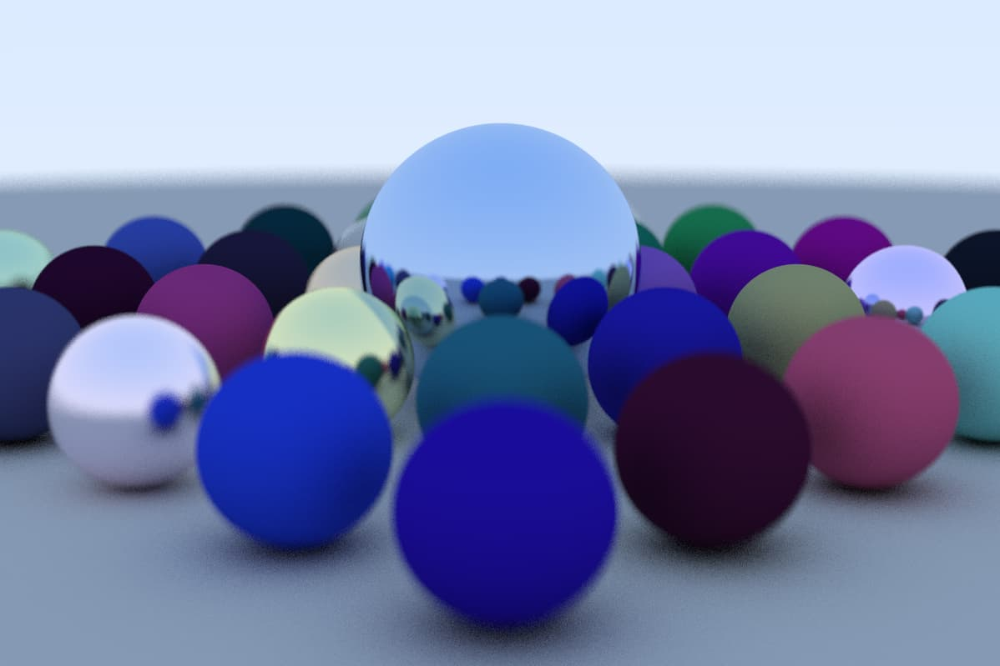

Computer graphics are usually created with the help of dedicated GPU hardware. However, things get more interesting when you implement these calculations through software.
For me, this method is more intuitive, though far less performant. The term raytracing really just means each pixel's color is determined by "tracing" a ray of light out of the camera until we have determined it's color through the contact object's material. This project is heavily based on the book Raytracing in one weekend which is an awesome series about software rendering. My implementation is written in Rust.
Depth of Field, Metal reflectivity, camera position
  